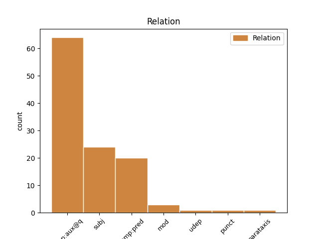
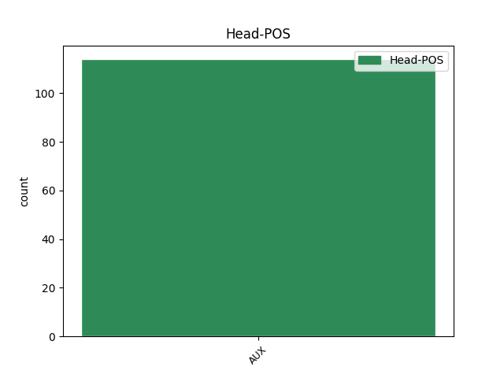
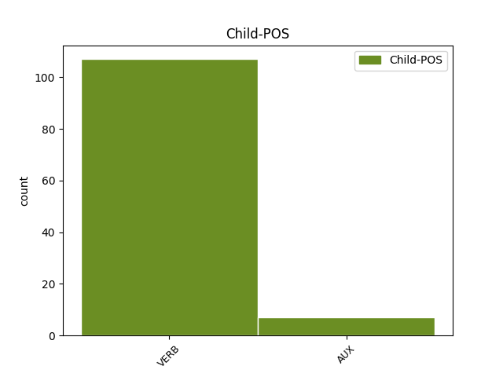

Distribution of features within this leaf



Agreement Rules sorted by frequency.
- When the dependent token is the complement for auxiliary(comp:aux@q) of the head token, and the head token is AUX
1 İnanmıyor inan VERB Verb Aspect=Prog|Mood=Ind|Number=Sing|Person=3|Polarity=Neg|Polite=Infm|Tense=Pres 2 comp:aux@q _ _
2 musunuz mu AUX Ques Aspect=Perf|Mood=Ind|Number=Plur|Person=2|Tense=Pres 0 _ _ _
3 . _ _ _ _ 0 _ _ _
1 Çalışma _ _ _ _ 0 _ _ _
2 saatlerinin _ _ _ _ 0 _ _ _
3 uzaması uza VERB Verb Aspect=Perf|Case=Nom|Mood=Ind|Number[psor]=Sing|Person[psor]=3|Polarity=Pos|Tense=Pres|VerbForm=Vnoun 8 subj _ _
4 sizin _ _ _ _ 0 _ _ _
5 için _ _ _ _ 0 _ _ _
6 problem _ _ _ _ 0 _ _ _
7 yaratır _ _ _ _ 0 _ _ _
8 mı mı AUX Ques Aspect=Perf|Mood=Ind|Number=Sing|Person=3|Tense=Pres 0 _ _ _
9 . _ _ _ _ 0 _ _ _
1 Ben _ _ _ _ 0 _ _ _
2 kızdığım _ _ _ _ 0 _ _ _
3 insanla _ _ _ _ 0 _ _ _
4 halleşmez hâlleş VERB Verb Aspect=Hab|Mood=Ind|Polarity=Neg|Tense=Pres|VerbForm=Part 5 comp:pred _ _
5 sem i AUX Zero Aspect=Perf|Mood=Cnd|Number=Sing|Person=1|Tense=Pres 0 _ _ _
6 imkanı _ _ _ _ 0 _ _ _
7 yok _ _ _ _ 0 _ _ _
8 rahatlamam _ _ _ _ 0 _ _ _
9 . _ _ _ _ 0 _ _ _
1 Akçaalan _ _ _ _ 0 _ _ _
2 Mahallesinde _ _ _ _ 0 _ _ _
3 ki _ _ _ _ 0 _ _ _
4 ev _ _ _ _ 0 _ _ _
5 iyi _ _ _ _ 0 _ _ _
6 ydi i AUX Zero Aspect=Perf|Mood=Ind|Number=Sing|Person=3|Tense=Past 0 _ _ _
7 hoş _ _ _ _ 0 _ _ _
8 tu i AUX Zero Aspect=Perf|Mood=Ind|Number=Sing|Person=3|Tense=Past 6 mod _ _
9 , _ _ _ _ 0 _ _ _
10 ama _ _ _ _ 0 _ _ _
11 hatta _ _ _ _ 0 _ _ _
12 eş _ _ _ _ 0 _ _ _
13 dost _ _ _ _ 0 _ _ _
14 , _ _ _ _ 0 _ _ _
15 hısım _ _ _ _ 0 _ _ _
16 akraba _ _ _ _ 0 _ _ _
17 hep _ _ _ _ 0 _ _ _
18 orada _ _ _ _ 0 _ _ _
19 ydı _ _ _ _ 0 _ _ _
20 , _ _ _ _ 0 _ _ _
21 ama _ _ _ _ 0 _ _ _
22 devir _ _ _ _ 0 _ _ _
23 değişiyordu _ _ _ _ 0 _ _ _
24 . _ _ _ _ 0 _ _ _
1 Üniversitelerde _ _ _ _ 0 _ _ _
2 ki _ _ _ _ 0 _ _ _
3 bilimsel _ _ _ _ 0 _ _ _
4 çalışmalar _ _ _ _ 0 _ _ _
5 maddenin _ _ _ _ 0 _ _ _
6 yoktan _ _ _ _ 0 _ _ _
7 varolduğunu _ _ _ _ 0 _ _ _
8 ispatlarken ispatla VERB Verb Aspect=Hab|Mood=Ind|Number=Sing|Person=3|Polarity=Pos|Tense=Pres|VerbForm=Conv 20 punct _ SpaceAfter=No
9 , _ _ _ _ 0 _ _ _
10 yoktan _ _ _ _ 0 _ _ _
11 varetme _ _ _ _ 0 _ _ _
12 kavramını _ _ _ _ 0 _ _ _
13 üniversitelerin _ _ _ _ 0 _ _ _
14 dışında _ _ _ _ 0 _ _ _
15 tutma _ _ _ _ 0 _ _ _
16 arayışı _ _ _ _ 0 _ _ _
17 bilimdışı _ _ _ _ 0 _ _ _
18 bir _ _ _ _ 0 _ _ _
19 tavır _ _ _ _ 0 _ _ _
20 dır i AUX Zero Aspect=Perf|Mood=Gen|Number=Sing|Person=3|Tense=Pres 0 _ _ _
21 ... _ _ _ _ 0 _ _ _
1 Eğer _ _ _ _ 0 _ _ _
2 sözünü _ _ _ _ 0 _ _ _
3 ettiğiniz _ _ _ _ 0 _ _ _
4 şey _ _ _ _ 0 _ _ _
5 virtual _ _ _ _ 0 _ _ _
6 parçacıklar _ _ _ _ 0 _ _ _
7 sa i AUX Zero Aspect=Perf|Mood=Cnd|Number=Sing|Person=3|Tense=Pres 23 udep _ _
8 ( _ _ _ _ 0 _ _ _
9 aşağıda _ _ _ _ 0 _ _ _
10 ki _ _ _ _ 0 _ _ _
11 satırlarda _ _ _ _ 0 _ _ _
12 Verschuur'dan _ _ _ _ 0 _ _ _
13 yapılan _ _ _ _ 0 _ _ _
14 alıntıya _ _ _ _ 0 _ _ _
15 bakınız _ _ _ _ 0 _ _ _
16 ) _ _ _ _ 0 _ _ _
17 durum _ _ _ _ 0 _ _ _
18 hala _ _ _ _ 0 _ _ _
19 inandırıcı _ _ _ _ 0 _ _ _
20 olmaktan _ _ _ _ 0 _ _ _
21 uzak _ _ _ _ 0 _ _ _
22 demek _ _ _ _ 0 _ _ _
23 tir i AUX Zero Aspect=Perf|Mood=Gen|Number=Sing|Person=3|Tense=Pres 0 _ _ _
24 . _ _ _ _ 0 _ _ _
1 Eğer _ _ _ _ 0 _ _ _
2 sözünü _ _ _ _ 0 _ _ _
3 ettiğiniz _ _ _ _ 0 _ _ _
4 şey _ _ _ _ 0 _ _ _
5 virtual _ _ _ _ 0 _ _ _
6 parçacıklar _ _ _ _ 0 _ _ _
7 sa i AUX Zero Aspect=Perf|Mood=Cnd|Number=Sing|Person=3|Tense=Pres 0 _ _ _
8 ( _ _ _ _ 0 _ _ _
9 aşağıda _ _ _ _ 0 _ _ _
10 ki _ _ _ _ 0 _ _ _
11 satırlarda _ _ _ _ 0 _ _ _
12 Verschuur'dan _ _ _ _ 0 _ _ _
13 yapılan _ _ _ _ 0 _ _ _
14 alıntıya _ _ _ _ 0 _ _ _
15 bakınız bak VERB Verb Aspect=Perf|Mood=Imp|Number=Plur|Person=2|Polarity=Pos|Tense=Pres 7 parataxis _ SpaceAfter=No
16 ) _ _ _ _ 0 _ _ _
17 durum _ _ _ _ 0 _ _ _
18 hala _ _ _ _ 0 _ _ _
19 inandırıcı _ _ _ _ 0 _ _ _
20 olmaktan _ _ _ _ 0 _ _ _
21 uzak _ _ _ _ 0 _ _ _
22 demek _ _ _ _ 0 _ _ _
23 tir _ _ _ _ 0 _ _ _
24 . _ _ _ _ 0 _ _ _
Disagree Examples:
1 Ne _ _ _ _ 0 _ _ _
2 tuhaf _ _ _ _ 0 _ _ _
3 şeyler _ _ _ _ 0 _ _ _
4 değil _ _ _ _ 0 _ _ _
5 mi mi AUX Ques Aspect=Perf|Mood=Ind|Number=Sing|Person=3|Tense=Pres 0 _ _ _
6 , _ _ _ _ 0 _ _ _
7 şu _ _ _ _ 0 _ _ _
8 anlattıklarım anlat VERB Verb Aspect=Perf|Case=Nom|Mood=Ind|Number[psor]=Sing|Person[psor]=1|Polarity=Pos|Tense=Past|VerbForm=Part 5 subj _ _
9 size _ _ _ _ 0 _ _ _
10 ? _ _ _ _ 0 _ _ _
1 Konuştun konuş VERB Verb Aspect=Perf|Mood=Ind|Number=Sing|Person=2|Polarity=Pos|Tense=Past 2 comp:aux@q _ _
2 mu mu AUX Ques Aspect=Perf|Mood=Ind|Number=Sing|Person=3|Tense=Pres 0 _ _ _
3 onunla _ _ _ _ 0 _ _ _
4 . _ _ _ _ 0 _ _ _
1 Bir _ _ _ _ 0 _ _ _
2 yerlerde _ _ _ _ 0 _ _ _
3 buluşamayacakları buluş VERB Verb Aspect=Perf|Case=Nom|Mood=Pot|Number[psor]=Plur|Person[psor]=3|Polarity=Neg|Tense=Fut|VerbForm=Part 5 subj _ _
4 besbelli _ _ _ _ 0 _ _ _
5 ydi i AUX Zero Aspect=Perf|Mood=Ind|Number=Sing|Person=3|Tense=Past 0 _ _ _
6 . _ _ _ _ 0 _ _ _
1 Bir _ _ _ _ 0 _ _ _
2 süre _ _ _ _ 0 _ _ _
3 sonra _ _ _ _ 0 _ _ _
4 Milli _ _ _ _ 0 _ _ _
5 Savunma _ _ _ _ 0 _ _ _
6 Bakanlığı'nda _ _ _ _ 0 _ _ _
7 bize _ _ _ _ 0 _ _ _
8 , _ _ _ _ 0 _ _ _
9 çok _ _ _ _ 0 _ _ _
10 gerekçe _ _ _ _ 0 _ _ _
11 li _ _ _ _ 0 _ _ _
12 bir _ _ _ _ 0 _ _ _
13 dosya _ _ _ _ 0 _ _ _
14 hazırladığım hazırla VERB Verb Aspect=Perf|Case=Nom|Mood=Ind|Number[psor]=Sing|Person[psor]=1|Polarity=Pos|Tense=Past|VerbForm=Part 15 comp:pred _ _
15 ız i AUX Zero Aspect=Perf|Mood=Ind|Number=Plur|Person=1|Tense=Pres 0 _ _ _
16 halde _ _ _ _ 0 _ _ _
17 , _ _ _ _ 0 _ _ _
18 iki _ _ _ _ 0 _ _ _
19 satır _ _ _ _ 0 _ _ _
20 lık _ _ _ _ 0 _ _ _
21 bir _ _ _ _ 0 _ _ _
22 cevap _ _ _ _ 0 _ _ _
23 geldi _ _ _ _ 0 _ _ _
24 . _ _ _ _ 0 _ _ _
1 Onunla _ _ _ _ 0 _ _ _
2 en _ _ _ _ 0 _ _ _
3 son _ _ _ _ 0 _ _ _
4 içen iç VERB Verb Aspect=Perf|Mood=Ind|Polarity=Pos|Tense=Pres|VerbForm=Part 6 subj _ _
5 ceza _ _ _ _ 0 _ _ _
6 'ydı i AUX Zero Aspect=Perf|Mood=Ind|Number=Sing|Person=3|Tense=Past 0 _ _ _
7 , _ _ _ _ 0 _ _ _
8 diyorlar _ _ _ _ 0 _ _ _
9 . _ _ _ _ 0 _ _ _